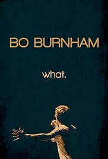
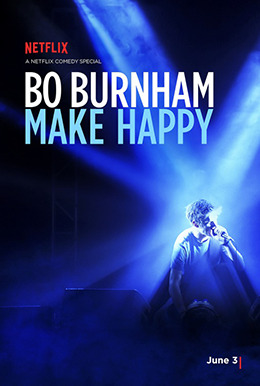
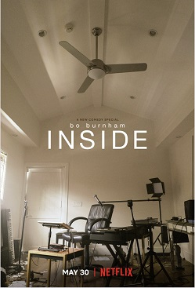
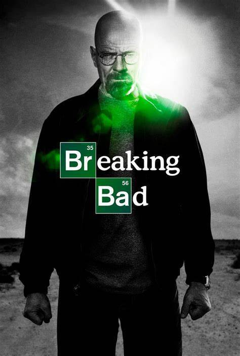
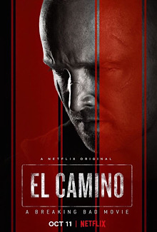
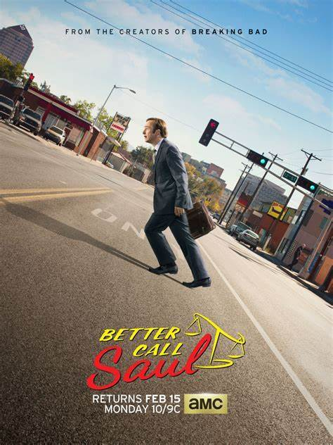

A 2013 stand-up comedy routine and third album by American comedian and musician Bo Burnham. It is his first show following his 2010 comedy special Words Words Words. Like the majority of Burnham's live work, the show consists of musical comedy, prop comedy, miming, observational jokes, and the inversion of established comedy clichés. The live performance debuted at the Regency Ball Room in San Francisco on December 17, 2013, while the album is derived from a live performance of the same set at the Barrymore Theatre in Madison, Wisconsin. In addition to the live performance, the album has five studio tracks: "Repeat Stuff", "Eff", "Nerds", "Channel 5: The Musical", and "Hell of a Ride".

A stand-up comedy routine written and performed by Bo Burnham which he performed live in 2015 and 2016. It was directed by Burnham and Chris Storer and a recording of the show was released on Netflix on June 3, 2016. Similar to Burnham's previous special what., the show is a specifically choreographed performance that combines comedy with music and uses pre-recorded music, stage lighting effects, and sound effects. It has received an overwhelmingly positive critical response, with several critics complimenting Burnham's deconstruction of various types of performances, clever jokes based on misdirection, and his stage persona.

A 2021 musical special written, directed, filmed, edited, and performed by American comedian Bo Burnham. Created alone by Burnham in the guest house of his Los Angeles home during the COVID-19 pandemic, it was released on Netflix on May 30, 2021. Featuring a variety of songs and sketches about his day-to-day life indoors, it depicts Burnham's deteriorating mental health, explores themes of performativity and his relationship to the internet and the audience it helped him reach, and addresses topics such as climate change and social movements. Other segments discuss online activities such as FaceTiming one's mother, posting on Instagram, sexting, and livestreaming video games.

An American crime drama television series created and produced by Vince Gilligan for AMC. Set and filmed in Albuquerque, New Mexico, the series follows Walter White (Bryan Cranston), an underpaid, dispirited high-school chemistry teacher struggling with a recent diagnosis of stage-three lung cancer. White turns to a life of crime and partners with a former student, Jesse Pinkman (Aaron Paul), to produce and distribute methamphetamine to secure his family's financial future before he dies, while navigating the dangers of the criminal underworld. Breaking Bad premiered on AMC on January 20, 2008, and concluded on September 29, 2013, after five seasons consisting of 62 episodes.

A 2019 American neo-Western crime thriller film. Part of the Breaking Bad franchise, it serves as a sequel and epilogue to the television series Breaking Bad. It continues the story of Jesse Pinkman, who partnered with former teacher Walter White throughout the series to build a crystal meth empire based in Albuquerque. Series creator Vince Gilligan wrote, directed, and produced El Camino; Aaron Paul reprised his role as Jesse Pinkman. Several Breaking Bad actors also reprised their roles, including Jesse Plemons, Krysten Ritter, Charles Baker, Matt Jones, Robert Forster, Jonathan Banks, and Bryan Cranston. Forster died on the day of the film's release, making it one of his final on-screen appearances.

An American legal crime drama television series created by Vince Gilligan and Peter Gould for AMC. Part of the Breaking Bad franchise, it is a spin-off of Gilligan's previous series, Breaking Bad (2008–2013), to which it serves primarily as a prequel, with some scenes taking place during and after the events of Breaking Bad. Better Call Saul premiered on AMC on February 8, 2015, and ended on August 15, 2022, after six seasons consisting of 63 episodes. Gilligan, who created and developed Breaking Bad, and Gould, who wrote the Breaking Bad episode "Better Call Saul", began considering a Saul Goodman spin-off in 2009. Because Saul's role in Breaking Bad had expanded beyond the writing staff's plans, Gilligan felt he could be explored further.